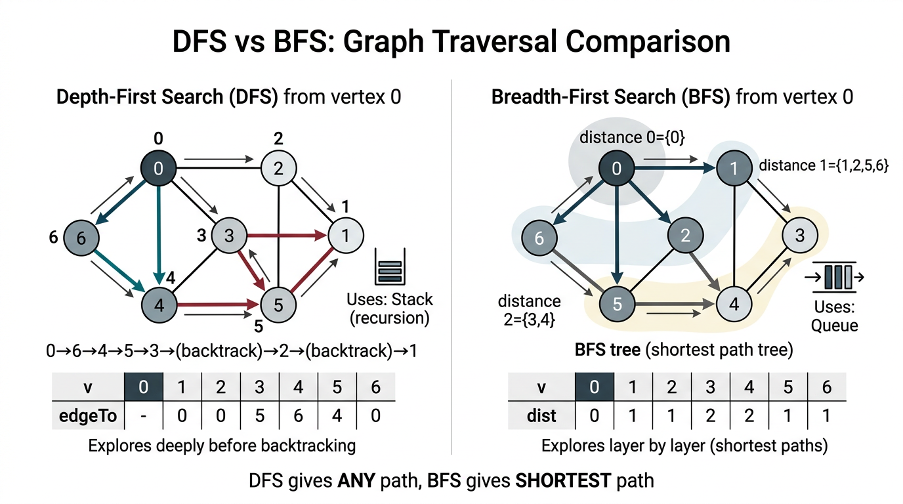

Undirected Graphs — COMP0005 Algorithms¶
Lecture-style notes on representing undirected graphs, basic traversals (DFS/BFS), and preprocessing for connectivity queries. This block sets up everything from shortest paths in unweighted graphs to MSTs and beyond.
1. COMPLETE TOPIC SUMMARIES¶
Graph definitions¶
An undirected graph \(G = (V, E)\) consists of:
- A set \(V\) of vertices (also called nodes).
- A set \(E\) of edges, where each edge is an unordered pair \(\{u, v\}\) with \(u, v \in V\) (often written \(u\text{--}v\) or \(u\text{-}v\)).
Terminology (exam-friendly):
| Term | Meaning |
|---|---|
| Vertex / node | An element of \(V\). |
| Edge | A connection between two distinct vertices (self-loops are usually excluded unless stated). |
| Degree \(\deg(v)\) | Number of edges incident to \(v\) (each edge \(v\text{--}w\) counts once toward \(v\)’s degree). |
| Path | A sequence \(v_0, v_1, \ldots, v_k\) where each consecutive pair \((v_{i-1}, v_i)\) is an edge. |
| Simple path | A path with no repeated vertices (often what people mean by “path” in proofs). |
| Cycle | A path \(v_0,\ldots,v_k\) with \(k \ge 1\), all edges as in a path, and \(v_0 = v_k\) (first = last). A simple cycle repeats no other vertices. |
| Connected | Two vertices \(s, t\) are connected if there exists a path between them. |
| Connected graph | Every pair of vertices is connected. |
| Connected component | A maximal subset \(C \subseteq V\) such that the induced subgraph on \(C\) is connected — you cannot add another vertex from \(V \setminus C\) while keeping the set connected. |
Applications: road/rail networks, the web and internet topology, social “who knows whom” graphs, protein–protein interaction networks, VLSI / circuit connectivity, and many more. The same abstraction (vertices + pairwise links) appears everywhere once you identify “things” and “relationships.”
Graph processing problems (overview)¶
Typical questions you might ask about a graph:
- Reachability / path: Is there a path from \(s\) to \(t\)? Output one path?
- Shortest path (unweighted): Fewest edges from \(s\) to \(t\) (BFS territory).
- Cycle detection: Does the graph contain a cycle?
- Euler tour: Traverse every edge exactly once (different hardness than Hamilton).
- Hamilton tour: Visit every vertex exactly once (generally much harder).
- Connectivity: How many components? Are \(v, w\) in the same component?
- Minimum spanning tree (MST): Cheapest set of edges connecting all vertices (later topic).
- Graph isomorphism: Are two graphs “the same” up to relabelling? (advanced / not core operational focus in intro courses.)
This week’s toolkit — API + representations + DFS/BFS + CC — solves connectivity, paths, unweighted shortest paths, and is the backbone for many harder problems.
Graph API (typical Java-style / course API)¶
Vertices are often named by integers \(0, 1, \ldots, V-1\) for array indexing.
- Edges: pairs \((v, w)\) of integers, with \(0 \le v, w < V\).
- Core operations:
V()— number of vertices.E()— number of edges (if maintained).addEdge(v, w)— add undirected edge \(v\text{--}w\) (implementations usually update both endpoints’ adjacency structures).adj(v)— iterable collection of vertices adjacent to \(v\).
The API hides representation; algorithms are written against adj, V, etc.
Graph representations¶
Adjacency matrix¶
A \(V \times V\) boolean (or 0/1) matrix adj with adj[v][w] = adj[w][v] = true iff edge \(v\text{--}w\) exists (diagonal often false unless self-loops allowed).
| Operation | Time | Notes |
|---|---|---|
| Space | \(\Theta(V^2)\) | Impractical for sparse graphs (few edges). |
| Add edge | \(\mathcal{O}(1)\) | Set two symmetric entries. |
| Check edge \((v,w)\) | \(\mathcal{O}(1)\) | One lookup. |
| Iterate \(\texttt{adj}(v)\)** | \(\Theta(V)\) | Must scan a whole row. |
When it shines: dense graphs, very fast edge queries, and some algebraic graph algorithms (matrices as operators — beyond this first pass).
Adjacency list¶
A vertex-indexed array of lists (often bags / linked lists) adj[v] holding all neighbours of \(v\). Each undirected edge \(v\text{--}w\) appears twice — once in adj[v], once in adj[w].
| Operation | Time | Notes |
|---|---|---|
| Space | \(\Theta(V + E)\) | \(V\) lists + \(2E\) edge references total for simple undirected graphs. |
| Add edge | \(\mathcal{O}(1)\) | Append to two lists (amortised if dynamic arrays). |
| Check edge \((v,w)\) | \(\mathcal{O}(\min(\deg(v), \deg(w)))\) | Scan one adjacency list; worst \(\mathcal{O}(V)\). |
| Iterate \(\texttt{adj}(v)\)** | \(\Theta(\deg(v))\) | Optimal per neighbour. |
Default choice for sparse graphs in algorithm courses.
Python-style sketch (undirected):
class Graph:
def __init__(self, V):
self.V = V
self.adj = [Bag() for _ in range(V)]
def addEdge(self, v, w):
self.adj[v].add(w)
self.adj[w].add(v)
( Bag() is an unordered collection supporting efficient insertion and iteration — like a multiset without multiplicity if edges are unique.)
Depth-first search (DFS)¶
Challenge: From a source \(s\), find all vertices reachable from \(s\) and (optionally) record a path back to \(s\).
Intuition: Maze exploration — go down a corridor until you hit a dead end, then backtrack and try another unexplored turn. Recursion naturally implements “go deeper, then return.”
Algorithm (connected-to-\(s\) marking):
- Mark \(s\) as visited.
- For each neighbour \(w\) of the current vertex \(v\), if \(w\) is not visited, recursively run DFS from \(w\).
Implementation notes:
- Recursion uses an implicit stack of activation frames.
marked[v]— boolean “have we seen \(v\) in this search?”edgeTo[w]— for path reconstruction: parent of \(w\) on the DFS tree (set when \(w\) is first discovered from \(v\)).
Correct parent assignment: when you traverse edge \(v\text{--}w\) and \(w\) is unmarked, set edgeTo[w] = v before recursing into dfs(G, w) so every visited vertex except \(s\) has a defined parent.
class DepthFirstPaths:
def __init__(self, G, s):
self.marked = [False] * G.V()
self.edgeTo = [-1] * G.V()
self.s = s
self.dfs(G, s)
def dfs(self, G, v):
self.marked[v] = True
for w in G.adj(v):
if not self.marked[w]:
self.edgeTo[w] = v
self.dfs(G, w)
Properties:
- Visits each vertex at most once; along each edge from the side you first cross it in the recursion tree, you do constant extra work.
- Time \(\Theta(V + E)\) for the whole graph in the usual adjacency-list model (each vertex marked once; each edge examined twice undirected).
- Path from \(s\) to \(t\) (if
marked[t]): followedgeTofrom \(t\) back to \(s\), often collected on a stack to output \(s \leadsto t\) forward.
What DFS does not guarantee here: shortest path in edge count — only some valid path.
Breadth-first search (BFS)¶
Challenge: From \(s\), find all reachable vertices and shortest paths measured in number of edges (unweighted graph).
Intuition: Explore in layers — first all vertices at distance \(0\), then \(1\), then \(2\), … like ripples from a stone in water.
Algorithm:
- Enqueue \(s\); set distance to source for \(s\) to \(0\).
- While the queue is not empty: dequeue \(v\); for each neighbour \(w\) not yet assigned a distance, enqueue \(w\), set
dist[w] = dist[v] + 1, andedgeTo[w] = v.
Data structures:
- FIFO queue — frontier of the current “wave.”
distToSource[v](ordist[v]) — number of edges on a shortest path from \(s\); use \(-1\) orNonefor “unseen.”edgeTo[w]— first step parent on a shortest-path tree.
def bfs(self, G, s):
q = Queue()
q.enqueue(s)
self.distToSource[s] = 0
while not q.isEmpty():
v = q.dequeue()
for w in G.adj(v):
if self.distToSource[w] == -1:
q.enqueue(w)
self.distToSource[w] = self.distToSource[v] + 1
self.edgeTo[w] = v
Properties:
- Marks every vertex in \(s\)’s component exactly once; each edge examined a constant number of times → \(\mathcal{O}(V + E)\) time with adjacency lists.
- Computes shortest path lengths in an unweighted graph (fewest edges). With nonnegative edge weights, you later upgrade to Dijkstra; with general weights, Bellman–Ford, etc.
Connected components (preprocessing with DFS)¶
Goal: After one-time preprocessing, answer “are \(v\) and \(w\) connected?” in \(\mathcal{O}(1)\) (after building auxiliary arrays).
Idea: Repeatedly start DFS from any unvisited vertex. Each DFS sweep discovers one entire connected component. Label every vertex discovered in the \(k\)-th sweep with cc[id] = k.
class ConnectedComponents:
def __init__(self, G):
self.marked = [False] * G.V()
self.cc = [-1] * G.V()
self.count = 0
for v in range(G.V()):
if not self.marked[v]:
self.dfs(G, v)
self.count += 1
def dfs(self, G, v):
self.marked[v] = True
self.cc[v] = self.count
for w in G.adj(v):
if not self.marked[w]:
self.dfs(G, w)
Query: \(v\) connected to \(w\) iff cc[v] == cc[w].
Cost: \(\mathcal{O}(V + E)\) time and \(\mathcal{O}(V)\) extra space for marked and cc.
(Union–Find can also maintain dynamic connectivity when edges are added online; CC here is the static “full graph in memory” preprocessing pattern.)
DFS vs BFS — summary¶

{kind=link}
| Intuition | Programming | Auxiliary structure | Typical “hero” capability | |
|---|---|---|---|---|
| DFS | Maze / backtracking | Natural recursion (explicit stack if iterative) | Stack (implicit or explicit) | Paths, topological ideas (directed, later), CC, cycle detection variants |
| BFS | Distance layers / waves | Iterative with a loop | Queue | Unweighted shortest paths, layers by distance |
Both run in \(\mathcal{O}(V + E)\) on adjacency lists for their standard graph-wide traversals.
2. EXAM-STYLE QUESTIONS (3–5 with model answers)¶
Q1 — Definitions¶
Question: Define path, cycle, connected graph, and connected component for an undirected simple graph.
Model answer: A path is a sequence of vertices \(v_0,\ldots,v_k\) such that each \(\{v_{i-1},v_i\}\) is an edge. A cycle is a path with \(k \ge 1\), \(v_0 = v_k\), and otherwise follows the edge condition along the way (examiners often also want simple cycle: no repeated vertices except endpoints). A graph is connected if for every pair \(u, v\) there exists a path between them. A connected component is a subset of vertices that is connected in the subgraph induced by those vertices and is maximal with this property (cannot add another vertex of the graph without breaking connectivity of the set).
Q2 — Representation comparison¶
Question: Compare adjacency matrix vs adjacency list for an undirected graph with \(V\) vertices and \(E\) edges. Give space and the cost of iterating all neighbours of \(v\).
Model answer: The adjacency matrix uses \(\Theta(V^2)\) space; iterating neighbours of \(v\) requires scanning a full row → \(\Theta(V)\) time even if \(\deg(v)\) is tiny. The adjacency list uses \(\Theta(V + E)\) space (each undirected edge stored twice); iterating adj(v) takes \(\Theta(\deg(v))\) time, which is optimal up to constants for listing those neighbours. The matrix wins on constant-time edge existence checks \(\mathcal{O}(1)\) vs \(\mathcal{O}(\deg)\) for lists.
Q3 — DFS vs BFS paths¶
Question: Both DFS and BFS from a source \(s\) can build a parent array edgeTo[]. Which traversal guarantees that following parents from \(t\) back to \(s\) yields a shortest path in terms of number of edges? Why?
Model answer: BFS guarantees shortest edge-count paths because it explores vertices in nondecreasing distance from \(s\); the first time \(t\) is dequeued, it was reached by a shortest route. DFS has no such ordering — it may plunge deep along one branch first — so the DFS tree path can be longer than necessary. Hence only BFS (among these two) is the standard unweighted shortest-path algorithm.
Q4 — Connected components complexity¶
Question: Explain why the connected components algorithm that runs DFS from every unvisited vertex still runs in \(\mathcal{O}(V + E)\) time total, not \(\mathcal{O}(V(V+E))\).
Model answer: Each vertex is marked exactly once across all DFS calls, because once marked[v] = True, \(v\) is never the start of a new component search from scratch in a way that reprocesses it. Each adjacency list is traversed at most once per vertex when that vertex is popped off the recursion stack / processed. Summed over the graph, edge examinations are \(\mathcal{O}(E)\) (each undirected edge looked at from both endpoints, constant factor). Total \(\mathcal{O}(V + E)\).
Q5 — Coding / invariant trap¶
Question: In DepthFirstPaths, when should edgeTo[w] = v be executed relative to dfs(G, w), and what goes wrong if you never set edgeTo for discovered children?
Model answer: Set edgeTo[w] = v when \(w\) is first discovered along the edge from \(v\), before recursing dfs(G, w) (or at least at discovery time). If edgeTo is never set, you cannot reconstruct a path from \(s\) to a visited vertex by following parent pointers — the traversal might still mark reachable vertices, but the path information is lost.
3. MUST-KNOW KEY POINTS¶
- Graph \(G=(V,E)\) — vertices, undirected edges; know degree, path, cycle, connected, component.
- API:
V(),addEdge(v,w),adj(v)— algorithms useadj, not raw matrices, unless stated. - Adjacency matrix: \(\Theta(V^2)\) space, \(\mathcal{O}(1)\) edge test, \(\Theta(V)\) neighbour scan.
- Adjacency list: \(\Theta(V+E)\) space, \(\Theta(\deg(v))\) neighbour scan — default for sparse graphs.
- DFS: recursion / stack; marks reachable vertices;
edgeTofor a path; not shortest in general. - BFS: queue; \(\mathcal{O}(V+E)\); shortest path in unweighted sense (fewest edges).
- Connected components: multi-source DFS (or BFS) labelling; query \(\mathcal{O}(1)\) via
cc[u] == cc[v]after \(\mathcal{O}(V+E)\) preprocess. - Traversal cost: both DFS and BFS linear in input size for adjacency lists: \(\Theta(V + E)\).
4. HIGH-PRIORITY TOPICS¶
| Priority | Topic | Why it matters |
|---|---|---|
| 🔴 Must know | Definitions: path, cycle, connected, component | Language used in every graph proof and exam short-answer. |
| 🔴 Must know | Adjacency list vs matrix: space + iterate adj(v) costs |
Classic comparison table question. |
| 🔴 Must know | DFS: marking, recursion/stack, edgeTo, \(\mathcal{O}(V+E)\) |
Core traversal; parent pointers for paths. |
| 🔴 Must know | BFS: queue, dist[], shortest path in unweighted graphs |
Distinct exam narrative from DFS. |
| 🔴 Must know | Connected components labelling + \(\mathcal{O}(V+E)\) total time | Shows “multiple DFS starts” still linear. |
| 🟡 Important | DFS vs BFS intuition (maze vs layers) | Explains when to choose which. |
| 🟡 Important | Double representation of edges in undirected adjacency lists | Drives the \(+E\) in space and 2E edge inspections. |
| 🟡 Important | Path reconstruction with stack from edgeTo |
Standard implementation detail. |
| 🟢 Useful but lower priority | Euler vs Hamilton as named problems | Vocabulary + “which is tractable” high-level awareness. |
| 🟢 Useful but lower priority | Matrix-based or algebraic graph angles | Enrichment; rarely the default implementation question. |
5. TOPIC INTERCONNECTIONS & BIGGER PICTURE¶
- Union–Find (earlier): answers dynamic connectivity with merges; CC + DFS answers static “same component?” after the full graph is built — same mathematical partition, different operational setting.
- Weighted shortest paths: BFS is unweighted shortest paths; Dijkstra (nonnegative weights) and others generalise the “expand frontier in order” idea with a priority queue.
- MST algorithms (later): Kruskal needs connected component tests on edges — Union–Find; Prim resembles BFS/Dijkstra-style growth from a tree.
- Directed graphs (later): DFS underpins topological sort, strongly connected components — same traversal machinery, richer structure.
- Complexity story: \(\mathcal{O}(V+E)\) is linear in the size of a sparse graph — the standard “we can afford to scan the whole graph once” baseline.
6. EXAM STRATEGY TIPS¶
- Define before you derive. One crisp sentence each for component, path, cycle saves marks on theory questions.
- Always state the representation you assume. Most proofs assume adjacency lists when quoting \(\mathcal{O}(V+E)\).
- BFS vs DFS: If the paper says “fewest edges” or “minimum hops”, say BFS. If it says “some path” or “detect cycle / explore structure”, DFS is often the intended hammer.
- CC timing: Emphasise each vertex marked once — avoids the bogus \(V \times (V+E)\) argument.
- Pseudocode hygiene: show
if not marked[w]:before recurse/enqueue; showedgeTo[w] = v(BFS/DFS) when \(w\) is first discovered. - Trade-off table: Be able to reproduce matrix vs list for space, edge query, iterate neighbours from understanding, not memorisation alone.
End of notes — Undirected Graphs (COMP0005).